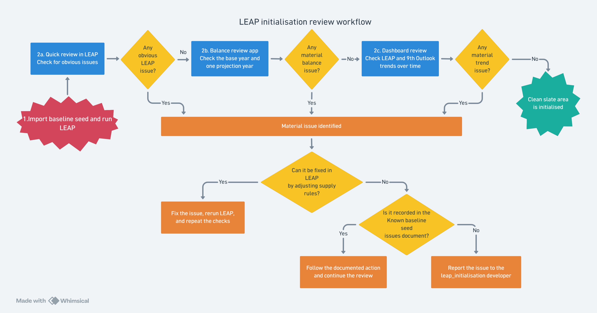
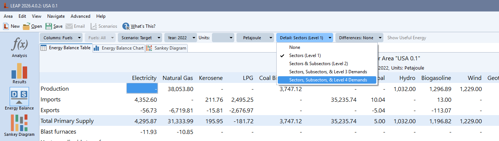
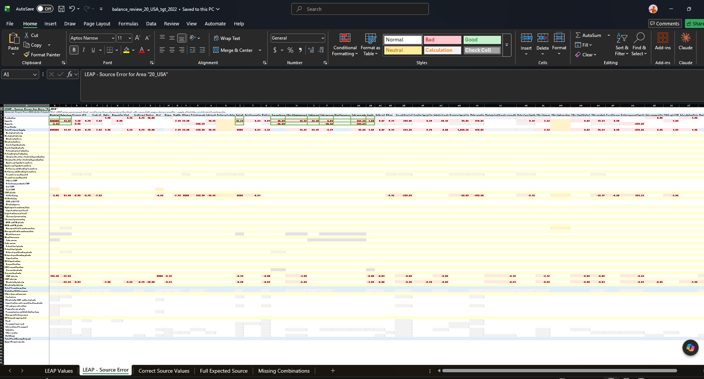
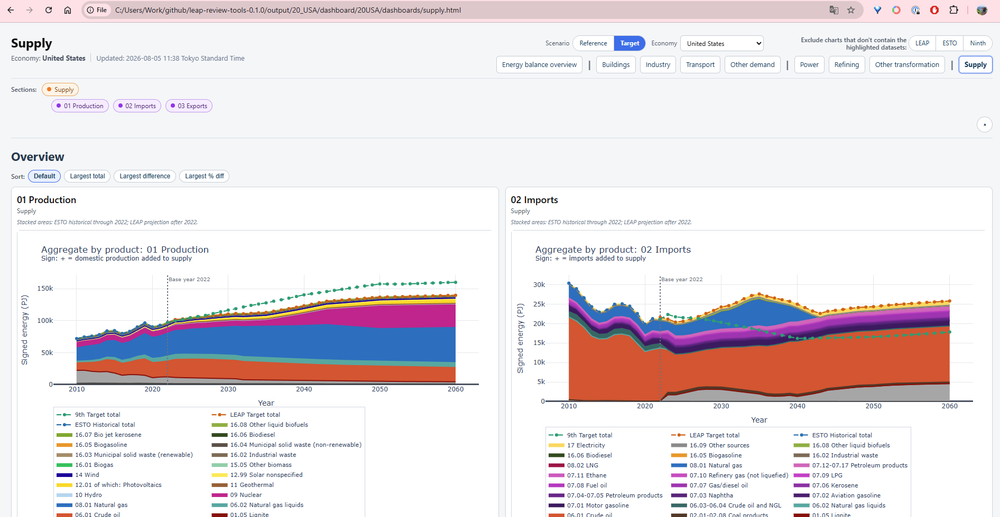

This is a guide to the wider LEAP initialisation process. The web app supports the review loop from the balance checks through the dashboard; follow the guided tour to see where each part fits.
● No Python, Git, or LEAP connection is needed once the web app is open.
01ExportGet the energy balance from LEAP
→
02ReviewFind and understand differences
→
03DashboardSee the whole picture
THE WEB APP
One file is all the app needs.
The economy and scenario are read from the export. You choose the review year(s), then the app calculates the diagnostics, workbook, and dashboard.
Try the tour ↗

The balance review app supports the highlighted review stages; LEAP remains the source of the baseline and the fixes.
LLEAP Balance ReviewEnergy Balance Diagnostics
BALANCE REVIEW
Add your LEAP export and pick a year
An Excel Energy Balance export is the only file you need.
1 fileis all we need
⇧ Your LEAP Energy Balance exportDrop your workbook hereor choose a .xlsx file
Build your reviewThe full run can take several minutes.
01 · PREPARE
Export the right table from LEAP.
In LEAP, set Units to Petajoules and Detail to Level 2 or deeper. Export all years you want to review. A Level 1 export is too shallow to compare meaningfully.

Use the detail selector to include sectors and subsectors.
What to bring One LEAP Energy Balance workbook. The web app reads the economy and scenario from it, so you do not need to type them separately.
02 · INPUTS
Choose the balance review year(s).
Enter one year such as 2022, or several separated by commas such as 2022, 2030, 2040. The dashboard uses the latest year in the configured ESTO dataset as its base year.
1UploadDrop the workbook into the export area.
2Review yearsChoose the historical or projection years to inspect.
3RunBuild the balance review workbook and dashboard.
03 · REVIEW WORKBOOK
Read the sheets as a story.
The workbook is a comparison, not a verdict. A difference means LEAP and the reference data disagree; it does not automatically mean LEAP is wrong.
01 · LEAP ValuesWhat did LEAP produce?
02 · LEAP – Source ErrorWhere does it disagree, and by how much?
03 · Correct Source ValuesWhat does the source data say it should be?
04 · Full Expected SourceWhat should exist, including missing rows?

Start with the largest red values on the Source Error sheet.

Historical values compare with ESTO; projections compare with the 9th Outlook.
04 · DASHBOARD
Use the dashboard for the whole picture.
The dashboard turns the same comparison into interactive sector pages. Select a page, hide or show series from the legend, and inspect the largest differences.
SupplyPowerTransportBuildingsIndustryRefining
Saved dashboards Saved views stay in your browser. Download the full archive when you need a durable copy or want to share it.
05 · WHEN SOMETHING LOOKS WRONG
Start with the simplest explanation.
1 · The export
Check that the workbook is Level 2 or deeper and covers the requested year.
2 · The comparison
A mapping or source-row interpretation may explain the difference.
3 · The baseline
The seed values or assumptions may need to be reviewed.